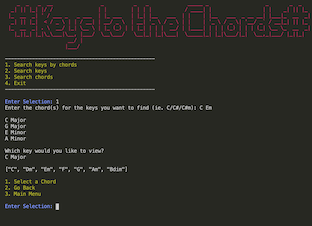

Terminal Application
This the Terminal App i worked on at Coder Academy. It is called 'Keys to the Chords'. It allows the user to search for minor/major keys and chords. You can search by one or more chords to find which keys they inhabit.
Portfolio Website
The website you are currently on! This portfolio contains a home page with pages for contact, a blog, my portfolio of work and biography.